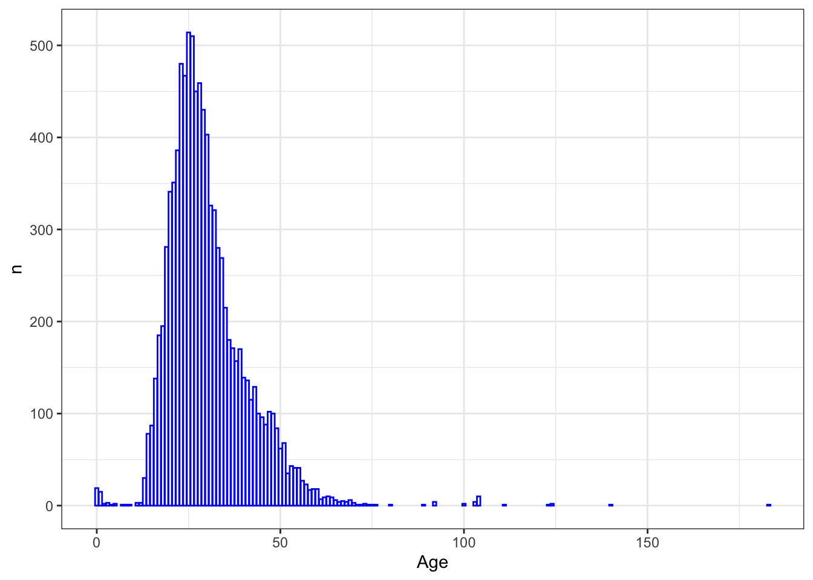

Tidy datasets are all alike, but every messy dataset is messy in its own way.
— Hadley Wickham
3.1 Синтаксис tidyverse
Существуют два основных “диалекта” R, один из которых опирается главным образом на функции и структуры данных базового R, а другой пользуется синтаксисом tidyverse (Winter 2020). Tidyverse – это семейство пакетов (метапакет), разработанных Хадли Уикхемом и др., которое включает в себя в том числе пакеты dplyr, ggplot2 и многие другие.
# загрузить все семействоlibrary(tidyverse)
── Attaching core tidyverse packages ──────────────────────── tidyverse 2.0.0 ──
✔ dplyr 1.1.4 ✔ readr 2.1.5
✔ forcats 1.0.0 ✔ stringr 1.5.1
✔ ggplot2 3.5.1 ✔ tibble 3.2.1
✔ lubridate 1.9.3 ✔ tidyr 1.3.1
✔ purrr 1.0.2
── Conflicts ────────────────────────────────────────── tidyverse_conflicts() ──
✖ dplyr::filter() masks stats::filter()
✖ dplyr::lag() masks stats::lag()
ℹ Use the conflicted package (<http://conflicted.r-lib.org/>) to force all conflicts to become errors
3.1.1 Tibble
Основная структура данных в tidyverse – это tibble, современный вариант датафрейма1. Тиббл, как говорят его разработчики, это ленивые и недовольные датафреймы: они делают меньше и жалуются больше2. Это позволяет решать проблемы на более ранних этапах, что, как правило, приводит к созданию более чистого и выразительного кода.
Основные отличия от обычного датафрейма:
текст по умолчанию конвертируется в строки, а не в факторы;3
усовершенствованный метод print(), не нужно постоянно вызывать head();
нет имен рядов;
допускает синтаксически “неправильные” имена столбцов;
при индексировании не меняет тип данных на вектор и др.
load("../data/diorisis_meta.Rdata")# распечатывает только первые 10 рядов, для каждого столбца указан тип данных, строки пронумерованыas_tibble(diorisis_meta)
# имена столбцовdf <-data.frame('var 1'=1:2, two =3:4)df
tbl <-tibble('var 1'=1:2, two =3:4)tbl
Пора тренироваться.
Задание
Установите курс swirl::install_course("Getting and Cleaning Data"). Загрузите библиотеку library(swirl), запустите swirl(), выберите этот курс и пройдите из него урок 1 Manipulating Data with dplyr.
На заметку
При попытке загрузить урок вы можете получить сообщение об ошибке: /Library/Frameworks/R.framework/Versions/4.1-arm64/Resources/library/swirl/Courses/Getting_and_Cleaning_Data/Manipulating_Data_with_dplyr/lesson.yaml) Scanner error: while scanning a tag at line 205, column 9 did not find expected whitespace or line break at line 205, column 19. Скопируйте из этого сообщения путь до папки с курсом. На MacOS откройте Finder > Go > Go to Folder. Вставьте путь до папки в открывшееся окно, найдите там файл lesson.yaml. Скачайте исправленный файл по ссылке и замените его в папке. Не меняйте название! Обсуждение проблемы здесь.
Все попробовали, не получилось?
Нажмите, чтобы увидеть подсказку.
Ну и ладно, двигайтесь дальше.
Все получилось?
Нажмите, чтобы увидеть подсказку.
Класс! Двигайтесь дальше.
Время вопросов! Обычный датафрейм или тиббл?
Вопрос
По умолчанию распечатывает только первые 10 рядов в консоль.
Вопрос
Молчаливо исправляет некорректные названия столбцов.
Вопрос
По умолчанию конвертирует строки в факторы при импорте данных.
Вопрос
Не имеет названий рядов.
Кстати, обратили внимание, как работает оператор <= с символьным вектором?
3.1.2 Dplyr
В уроке swirl выше вы уже немного познакомились с “грамматикой манипуляции данных”, лежащей в основе dplyr4. Здесь об этом будет сказано подробнее. Эта грамматика предоставляет последовательный набор глаголов, которые помогают решать наиболее распространенные задачи манипулирования данными:
mutate() добавляет новые переменные, которые являются функциями существующих переменных;
select() выбирает переменные на основе их имен;
filter() выбирает наблюдения на основе их значений;
summarise() обобщает значения;
arrange() изменяет порядок следования строк.
Все эти глаголы естественным образом сочетаются с функцией group_by(), которая позволяет выполнять любые операции “по группам”, и с оператором pipe%>% из пакета magrittr.
В итоге получается более лаконичный и читаемый код, что можно показать на примере.
Тут должен быть какой-то поучительный вывод. Но вместо него будет задание на кодинг. Вам придется редактировать код, который предложит программа, так что сгруппируйтесь.
Задание
Запустите swirl(), выберите курс Getting and Cleaning Data и пройдите из него урок 2 Grouping and Chaining with dplyr.
Правда или ложь?
Вопрос
Функция n_distinct() возвращает все уникальные значения.
Вопрос
Если x <- 1:100, то функция quantile(x, probs = 0.9) вернет значения от 91 до 100.
На заметку
Кванти́ль в математической статистике — значение, которое заданная случайная величина не превышает с фиксированной вероятностью. В нашем случае 90% данных ниже 90.1.
Это было сложное задание, можно сделать перерыв ☕
3.2 Опрятные данные
Но tidyverse – это не только особый синтаксис, но и отдельная идеология “опрятных данных”. “Сырые” данные, с которыми мы работаем, редко бывают опрятны, и перед анализом их следует “почистить” и преобразовать5.
Посмотрите на учебные тибблы из пакета tidyr и подумайте, какое из этих правил нарушено в каждом случае.
data("table2")table2
data("table3")table3
data("table4a")table4a
data("table4b")table4b
Важные функции для преобразования данных из пакета tidyr:6
separate() делит один столбец на новые;
unite() объединяет столбцы;
pivot_longer() удлиняет таблицу;
pivot_wider() расширяет таблицу;
drop_na() и replace_na() указывают, что делать с NA и др.
Также упомянем функцию distinct() из dplyr, которая оставляет только уникальные наблюдения и предсталяет собой аналог базовой unique() для таблиц.
Кроме того, в dplyr есть полезное семейство функций _join, позволяющих объединять данные в различных таблицах.7 Дальше мы потренируемся с ними работать, но сначала пройдем урок swirl. Это достаточно сложный урок (снова понадобится редактировать скрипт), но он нам дальше здорово поможет.
Задание
Запустите swirl(), выберите курс Getting and Cleaning Data и пройдите из него урок 3 Tidying Data with tidyr.
Правда или ложь?
Вопрос
Функция separate() обязательно требует указать разделитель.
Вопрос
Принципы опрятных данных требуют, чтобы одному наблюдению соответствовал один столбец.
Вопрос
Функция contains() используется вместе с filter() для выбора рядов.
Отличная работа! Прежде чем двигаться дальше, приведите в порядок table2, 3, 4a-4b (последние две также объедините) в единый датасет.
Задание
ПРАКТИЧЕСКОЕ ЗАДАНИЕ 3: БИБЛИОТЕКА GUTENBERG
devtools::install_github("ropensci/gutenbergr")library(gutenbergr)library(dplyr)library(tidyr)works <-gutenberg_works()# Отберите ряды, в которых gutenberg_author_id равен 65;# после этого выберите два столбца: author, titlemy_data <- works %>%# ваш код здесь# Загрузите данные об авторах и выберите столбцы: author, deathdateauthors <- gutenberg_authors %>%# ваш код здесь# Соедините my_data с данными о смерти автора из authors, # так чтобы к my_data добавился новый столбец. # После этого используйте функцию separate, # чтобы разделить столбец с именем и фамилией на два новых: author, name. # Удалите столбец с именем автора, оставив только фамилию.# Добавьте новый столбец century, # используя функцию mutate и данные из столбца deathdate. # Используйте оператор pipe, не сохраняйте промежуточные результаты!my_data %>%# ваш код здесь
3.3 Пример: буккроссинг
3.3.1 Смотрим на данные
Загрузим пример неопрятных данных и попробуем их преобразовать для анализа. Book-Crossing – датасет с рейтингами миллионов книг и обезличенными демографическими данными о более 250 тысячах их читателей. Этот датасет хранится в трех разных файлах, которые надо скачать архивом отсюда. Распечатайте архив, прежде чем выполнять код ниже.
users содержит больше одного значения в столбце Location
много отсутствующих значений
данные вводятся самими пользователями через сайт https://www.bookcrossing.com/ ; они могут содержать недостоверную информацию, см. напр. moscow, yukon territory, russia (Юкон – это территория Канады).
Age представляет собой строку и др.
Прежде чем начинать преобразование, надо сформулировать примерный вопрос и понять, что для нас важно, а что нет.
Нажмите, чтобы увидеть подсказку
Сколько читателей старше 30 лет пользуются сервисом в Австралии?
В какие года опубликованы самые популярные книги?
Кто популярнее у читателей, Роулинг или Толкин?
Какой процент пользователей никогда не оставляет отзывы?
Есть ли связь между возрастом и количеством оценок? и т.п.
Чтобы объединить данные, надо понять, через какие переменные они связаны.
Нажмите, чтобы увидеть подсказку
Ответ: ratings и books связаны через переменную isbn, ratings и users связаны через переменную User-ID.
3.3.2 Трансформируем данные
Начнем с пользователей.
users_separated <- users %>%mutate(Age =as.numeric(Age)) %>%filter(!is.na(Age)) %>%# drop_na(Age) тоже решил бы нашу задачуseparate(Location, into =c(NA, NA, "country"), sep =",")head(users_separated) # можно было бы не сохранять, но так нагляднее
Здесь можно сразу посмотреть, из каких стран и какого возраста пользователи.
Здесь возможно несколько стратегий. Можно выбрать все ряды с названиями реальных стран либо (если это соответствует исследовательской задаче) какую-то одну страну. Можно и проигнорировать, если происхождение пользователей не так важно.
Допустим, мы решаем сосредоточиться на Испании. Обратите внимание, что в название страны после разделения функцией separate() попали пробелы, и от них надо избавиться. Это делается при помощи регулярных выражений (о них в другой раз) и функции mutate().
spain_data <- users_separated %>%mutate(country =str_replace_all(country, pattern ="\\s+", "")) %>%# это означает, что пробел мы меняем на "ничто", т.е. убираемfilter(country =="spain") %>%group_by(Age) %>%count() %>%arrange(-n)head(spain_data)
Столбиковая диаграмма подходит для визуализации подобных данных:
spain_data %>%ggplot(aes(Age, n)) +geom_bar(stat ="identity", col ="blue", fill ="white") +theme_bw()

Какие целеустремленные испанцы! Читают от 0 до 183 лет 😵
После того, как мы убрали лишние пробелы из названий стран, можно фильтровать:
spain_id <- users_separated %>%mutate(country =str_replace_all(country, pattern ="\\s+", "")) %>%filter(country =="spain") # на этот раз мы не считаем число наблюдений в группе, а забираем все ряды, которые отвечают условию
3.3.3 Объединяем данные
Мы уже выяснили, что ratings и users связаны через переменную User-ID, и в ratings хотели бы оставить только те id, которые отвечают заданному условию (страна, возраст и т.п.). Для такого рода объединений как раз подходят функции _join8.
spain_ratings <- spain_id %>%left_join(ratings) %>%filter(!is.na(ISBN)) %>%filter(`Book-Rating`>7) %>%# имена синтаксически неправильные, поэтому требуется знак "`"group_by(ISBN) %>%count() %>%arrange(-n)
Joining with `by = join_by(`User-ID`)`
spain_ratings
Осталось выяснить, что это за книги. Для этого объединяем spain_ratings и books.
Как минимум мы выяснили, что испанцы предпочитают читать по-испански! (Здесь снова можно подумать. Возможно, у одной книги разные ISBN, и стоило группировать не по ISBN, а по названию или автору?)
Осталось избавиться от неинформативных столбцов (это ссылки, часто битые, на изображения обложки). Если мы знаем номера этих столбцов, то это можно сделать по индексу:


{kind=link}